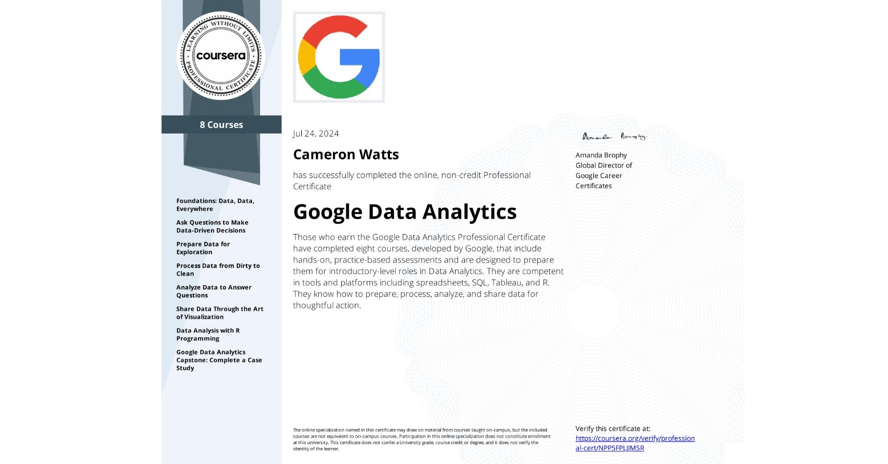

In the Google Data Analytics Professional Certificate program, I developed a comprehensive skill set in data analytics using tools like Excel, SQL, Tableau, and R. I learned data cleaning, preparation, and statistical analysis techniques, as well as creating interactive dashboards for dynamic data exploration. The program emphasized data-driven decision-making through hands-on projects, which allowed me to apply my skills in real-world scenarios.
 Back to Home Page